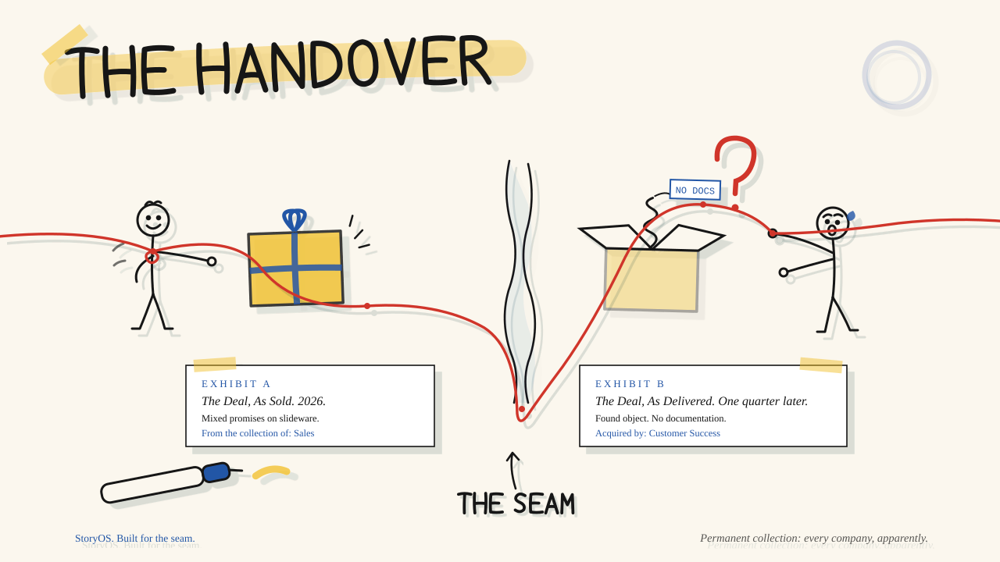

כל עסקה נסגרת עם סיפור. ואז היא עוברת למישהו שלא היה בחדר.
לכל ניצחון יש שדרה: הכאב שאיתו הלקוח הגיע, הפער שהפך את השינוי לדחוף, והעתיד שהובטח לו. העסקה נסגרת, והשדרה הזאת מסופרת מחדש בידי מישהו שלא שמע את המקור. הנה מסירה אמיתית אחת:
פקודות גנריות וכלים נקודתיים לא רואים את זה. הם חיים בצד אחד של הקיר. StoryOS בנויה לשמור על הסיפור שלם, מהשיחה הראשונה ועד החידוש.

הכירו את הצוות שעושה את העבודה.
שבעה מומחים חולקים מוח-חברה אחד, כך שכל מה שהם מייצרים נשמע כמוכם ויושב על אותה שדרה. אתם מתארים רגע מכירה אמיתי במילים פשוטות, והמומחה הנכון לוקח משם. הנה שבוע אחד:
יום שני, מתחרה נוחת בתוך עסקה חיה. אתם אומרים את זה במשפט. פוֹרֶסט בונה כרטיס מענה ותסריט שיחה של שישים שניות, בקול שלכם, על השדרה. לפני שזה מגיע לנציג, שֶׁרְלוֹק בודק מול שבעה כללי ברזל: בלי טענות בלי מקור, בלי "אנחנו יותר אינטואיטיביים" גנרי, עם המשבצת "איפה המתחרה חזק" מלאה ביושר. העסקה נסגרת, ומסירת מכירות-להצלחה מעבירה את ההבטחה המדויקת אל סקוֹטי, כך שהלקוח אף פעם לא חוזר על עצמו. שבוע אחרי, מיאגי קורא את תמלול השיחה ואומר לכם מה כמעט עלה לכם בעסקה. שום דבר לא מתאפס: מה שעבד נשמר בחזרה אל המוח, וברבעון הבא זה מתחיל חד יותר.
מוח החברה
הקול שלכם, הבידול האמיתי, ההוכחות וההתנגדויות. נטען פעם אחת. כל סוכן קורא אותו קודם, כך ששום דבר שהם מייצרים לא נשמע גנרי.
פוֹרֶסט המספר
עסקה נכנסת, ויוצאים כרטיס מענה, תסריט שיחה, דף אחד או נרטיב להנהלה. על השדרה, ובמילים שלכם.
מיאגי המאמן
קורא תמלול שיחה, משחק את הקונה הכי קשה שלכם, ואומר ביושר למה עסקה נתקעה.
דמבלדור המדריך
הופך עסקאות אמיתיות למסלולי קליטה והסמכות, כדי שנציג חדש מתחיל שוטף.
שֶׁרְלוֹק המבקר
בודק כל תוצר מול שבעה כללי ברזל לפני שהוא יוצא. תופס מספרים מומצאים וטענות גנריות.
דרייפר השיווק
הופך את אותו סיפור לקמפיינים ולהשקות, כדי שהשיווק והשטח סוף סוף יגידו דבר אחד.
סקוֹטי המטמיע
הופך עסקה שנסגרה לתוכניות הטמעה, נרטיבים לסקירה רבעונית, וקריאה כנה של סיכון בחידוש.
אלפרד המלווה
זה שאיתו אתם מדברים ישירות. "באיזה מהלך להשתמש?" "איך ממלאים את המוח?" תמיד מפנה אתכם למקום הנכון.
ואלה המהלכים, המהלכים היומיומיים שהצוות מריץ:
שבעה מומחים · תשעה מהלכים · אחת-עשרה מיומנויות · מוח-חברה אחד.
בנוסף קצב יומי: תדריך יומי, סקירה שבועית, וביקורת. כל קובץ על המחשב שלכם.
למה זאת לא עוד פקודה.
תיקייה של פקודות חכמות שוכחת אתכם ברגע שסוגרים אותה. StoryOS בנויה כך שהאיכות מחזיקה, עסקה אחרי עסקה:
המוח שלכם נדחס לתקציר עבודה שכל סוכן קורא קודם, כך שהקול שלכם שורד אפילו תמלול של חמישה-עשר אלף מילים שמודבק מעליו.
כל טענה שאי אפשר להוכיח מסומנת לכם לאימות, ושום תוצר לא נסגר עם אחת פתוחה. אתם נשארים העורכים הראשיים; היא לעולם לא ממציאה שם לקוח, מספר או מחיר.
שֶׁרְלוֹק מבקר כל תוצר מול שבעה כללי ברזל לפני שהוא מגיע ללקוח. שפה גנרית, מספרים מומצאים, "איפה המתחרה חזק" שחסר, הכל נתפס לפני שאתם שולחים.
מה שעובד בשטח מקודם אל תוך המוח עם הזמן, כך שהמערכת מתחדדת בכל עסקה במקום להתאפס לאפס.
מסירת מכירות-להצלחה הופכת את הסיפור כך שהלקוח אף פעם לא חוזר על עצמו. שום כלי נקודתי לא רואה מעבר לקיר הזה.
מתקינים לבד. בערך עשרים דקות.
בלי מהנדס, בלי שיחת קליטה, בלי פלטפורמה להתחבר אליה. אם אתם יודעים להדביק, אתם יודעים להריץ.
הקבצים יושבים על המחשב שלכם ועונים לכם. אין מה לחדש, אין מה שאפשר לכבות.
מתקינים פעם אחת. מחזיקים את המנוע לתמיד.
לא סדנה שמגיעים אליה ושוכחים. לא מושב שמשכירים. מערכת שמתקינים פעם אחת ושומרים, עובדת לכל עסקה, בקול שלכם.
- שבעה סוכנים מומחים, תשעה מהלכים ואחת-עשרה מיומנויות
- מוח החברה, בקול שלכם
- תהליך המסירה ממכירות להצלחת לקוחות, התפר סגור
- בונוס: מוח הדגמה כדי שזה עובד בשנייה שמתקינים
- בונוס: מפת התפר, הריצו על כל עסקה לראות איפה הסיפור נשבר
- רץ אצלכם בקלוד. בלי פלטפורמה, בלי מושב, בלי חידוש.
- אתם מחזיקים את הקבצים. לא סדנה. לא מנוי.
StoryOS היא אחת הנקודות.
ככה הסיפור מחזיק כשעסקה חוצה מהמכירות להצלחת הלקוחות. שלוש דרכים להיכנס, מתי שתהיו מוכנים:
אדם אחד מאחורי הכל, מחבר את השאר לקו אחד: